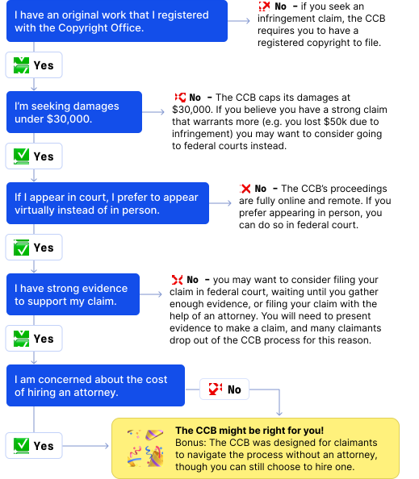
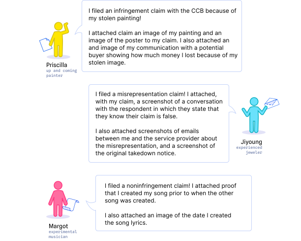

About
Maybe you are a creator who feels their work was copied and wants to set things right. Maybe you recently received a claim that you copied someone else’s work. Or maybe you’re just curious about the Copyright Claims Board (CCB). Regardless of what brought you here, this document is a starting point and a guide for creators. This guide helps you navigate the CCB, but it is not comprehensive, and there will be moments when outside resources are pointed to for additional guidance.

What is copyright?
Imagine you spend hours painting a beautiful landscape—after weeks of work, you upload an image of your painting to share with the world in your online portfolio. A few days later, you see a copy of your painting sold as a print on an online marketplace. Have your intellectual property rights been violated?
Intellectual property refers to creations of the mind, such as inventions and artistic works [ ]. Intellectual property rights allow individuals to protect their work by preventing others from reproducing or exploiting their intellectual creations [ ]. Intellectual property rights include copyrights, patents, trademarks, and design rights [2]. We’re focusing on copyright here.
Copyright is “the body of law that deals with the ownership and use of works of literature, music, and art.”[ ] The basic purpose of copyright is to “enrich our society's wealth of culture and information.”[3] Congress draws power from the US Constitution to enact copyright laws to “promote the progress of science and useful arts[.]”[ ] Because more than one person can share intellectual property simultaneously, copyright law helps protect artistic labor by creating a boundary around what is and isn’t for the artist to own. In this way, copyright law promotes innovation because artists know they can be paid for their work. Copyrights eventually expire if not renewed, returning works to the public domain [20].
Copyright is different from Copyright Registration
Copyright is established as soon as your expressive work is complete, but registering a copyright gives your work special legal protections.
Copyright Upon Fixation
The right to register a work for copyrightToday, creators earn a copyright upon fixation after completing their work. Creators’ works are automatically copyrighted upon “fixation” [ ]. To qualify for fixation, a work must be:
- fixed in a tangible medium of expression (e.g. a musical work on a record),
- perceived, reproduced, or otherwise communicated, either directly or with the aid of a machine or device [5].
Thinking back to the landscape painting example—the work is fixed as soon as you finish the painting. At that moment, you earn a copyright over the work.
With fixation, you gain the right to register for a copyright to protect it. Beyond that, copyrights alone do not establish legal protections. This is why the U.S. Copyright Office recommends that creators still register their work for copyright to publicly record their ownership status [ ].
Copyright Registration
The right to legally defend your workUnlike copyrights upon fixation, copyright registration creates legal benefits. You cannot bring a claim or litigate an issue of copyright without registering your copyright. Upon fixation, you gain the right to register for copyright, but you do not necessarily earn the right to defend your copyright legally without registration. You must have a registered copyright to bring infringement claims and seek monetary relief through the legal system. This is the key distinction between copyright and copyright registration [6].
How do you register for a copyright?
Applying for registration requires an application, a filing fee ($65), and a copy of the work (which the Office calls a “deposit”) [ ], [22]. You can bring a claim by filing a complaint to a federal court or by filing your claim online with the Copyright Claims Board. Once again, you can copyright many different forms of art. These forms of art include digital art (like photography), physical art (like painting or sculpture), and musical works (like musical composition). Before looking at how to bring a claim at the CCB, let’s look more closely at some terms you may want to familiarize yourself.
- Works gain copyrights once they are "fixed" in a tangible expressive medium.
- Copyrights alone do not create legal rights.
- Registered copyrights establish legal rights - when a work with a registered copyright is infringed, you can defend your rights in the legal system.
- You are required to have copyright registration or pending copyright registration for works you seek to defend with infringement claims with the CCB.
What is the Copyright Claims Board (CCB)?
In December 2020, the Copyright Alternative in Small-Claims Enforcement Act of 2020 (CASE Act) endowed the Copyright Office with the power to establish the Copyright Claims Board (called the “CCB”) [ ]. The CCB was established by the federal government with the goal of expanding “access to justice” making “the copyright system as understandable and accessible to as many members of the public as possible.” [ ]
The CCB is the Copyright Office’s approach to resolving copyright disputes online. Three presiding officers, each with deep expertise in copyright law, make case determinations and lead the CCB. Court hearings and proceedings are conducted fully online, removing the barrier to entry that can occur when proceedings occur in court. The CCB is designed for claimants to navigate without an attorney, though you are welcome to hire one. Although litigants can represent themselves in federal court, some may find this easier to do in the CCB’s claim process.
The CCB sees all kinds of copyright cases. As of 2023, the most common claims were for pictorial, graphic, or sculptural works. Architectural claims (e.g. based on an architectural firm’s design of a home) were the least common.
Unlike federal court, the CCB’s jurisdiction is limited to claims of copyright infringement, claims seeking declarations that specific activities do not infringe copyright; and claims of “misrepresentation” in notices sent under the Digital Millennium Copyright Act (DMCA).
Notably, participation in the CCB is also fully voluntary. While a claimant may raise a valid argument, respondents can decide whether to participate in CCB proceedings (more on this later). If a respondent chooses to opt out, a claimant can still bring a lawsuit against that respondent in federal court.
If a respondent files a counterclaim, it must be related to the original claim. Counterclaims are also limited to the types of claims in the CCB’s jurisdiction and must arise from the same “transaction or occurrence” (the same facts and circumstances) as the original claim.
Neither party can bring a claim before the CCB seeking more than $30,000 in total damages (more on this later, as well!).
Could the CCB be right for you?
The CCB is one among a few options you have to legally defend your intellectual property. The CCB's process is different from that of federal courts, and comes with its own eligibility requirements.
What are the tradeoffs of filing with the CCB?
There are some advantages and disadvantages to filing with the CCB as opposed to filing in federal court. Consider the following when you consider your claim:
👍 ADVANTAGES
- There is no attorney required.
- You can avoid attorney’s fees by filing with the CCB.
- The CCB is a more approachable court system.
- The CCB is entirely online, and there are some advantages to a digital court system. There are text boxes to input information in the CCB’s online forms.
- This helps you to figure out the information you need to file a claim and navigate court proceedings.
- There is a low filing fee—filing your claim and proceedings to an active case require $40 and $60, respectively.
- The administration is fully remote, negotiating travel costs and conflicts with other commitments.
- Decisions are made by a panel of experts on copyright who focus primarily on these cases.
👎 DISADVANTAGES
- There is no attorney required.
- Filing alone can sometimes be confusing, and it is important to remember that you need enough evidence to support a viable claim. This can be easier with the help of an attorney who can guide you through the process. Remember that you can also file with the CCB with an attorney.
- Damages are limited to $30,000 per proceeding.
- Respondents may not agree to litigate via the CCB.
- Evidence to support your claim must be captured digitally.
- To create a compelling claim, you need to capture all your communications and images digitally and in a format that will help the CCB officers assess your claim.
Is your claim eligible for the CCB?
Filing a successful claim with the CCB may not be as easy as it seems. Review the list below to determine if the CCB is right for you. All the following must be true for you to be eligible to bring a claim, in general:Filing a successful claim with the CCB may not be as easy as it seems. Review the list below to determine if the CCB is right for you. All the following must be true for you to be eligible to bring a claim, in general:
- You and your respondent live in the United States.
When filing a claim, you must provide a US-based address for each respondent. The CCB cannot decide cases against parties without a US address. - You have either an infringement, noninfringement, misrepresentation, or counterclaim.
Counterclaims are filed by the respondent, who may disagree with your original claim. - You have registered your work at the Copyright Office.
To learn more about registering your work, go to the Registering a Work FAQ provided by the Copyright Office. - The statute of limitations has not expired.
Under the Copyright Act, a plaintiff must bring suit within three years of a claim of copyright infringement accruing. In other words, you should bring your claim within three years of when the copyright infringement began. - You have not exceeded your limit of 30 total claims within 12 months.
- You have a right to file this case (e.g. you own the copyright you seek to enforce).
- If you have previously filed this claim with the CCB, it has not been dismissed with prejudice or reached a final determination before it was closed. You also cannot file a claim if you received a final judgment on the same claim in a federal court.
- The CCB or any court has not already reached a final decision on this claim, or the claim is currently pending before a court.
- You are okay with a damages cap of $30,000 or $5,000 for smaller claims.
-
You are okay with knowing that your claim depends on a response by your respondents.
Note: Respondents can opt out of CCB proceedings. If they opt out, you can refile in federal court either by yourself (as a pro se litigant) or with an attorney.
DAMAGES & SETTLEMENTS
When you file a claim, you’ll need to indicate the compensation you are owed. The list below summarizes some issues to consider:
- The CCB only allows for actual or statutory damages. If you think you have a better chance of seeking higher damages in federal court, then the CCB may not be your best option.
- If you are seeking damages under $5,000, you may want to consider filing under a simplified CCB “Smaller Claims” track. This track will involve only one presiding officer, who plays a more prominent role in the case. The CCB published a helpful table highlighting the key differences between this track and the default track in its handbook for Smaller Claims (Page 3).
- A claimant bringing an infringement claim can seek an award of actual damages and the infringer’s profits, statutory damages, or no damages. The claimant must choose which type of awards they are seeking before the Board makes its final determination, and they should do this no later than when the claimant submits their written testimony in the proceeding. Statutory damages are capped at $15,000 per infringed work (not per infringement) or $7,500 if the work wasn’t registered in a timely manner (as described below under “Statutory Damages”). For more information on damages, see the CCB book on statutory damages.
- If you choose to participate in CCB-facilitated settlement discussions, a Copyright Claims Officer other than the one handling the day-to-day aspects of the proceeding will be assigned to assist you at a settlement conference. For more information on settlements, see the CCB handbook on settlements (Page 4).
Helpful Terminology
The CCB frequently uses these terms in their forms, proceedings, and handbooks.
| Term | Definition |
| Claimant | Someone who brings a claim to the CCB. Because a claimant begins the process, they are responsible for filing a claim, serving the claim, and for paying the required fees ($40 at first, and $60 when the case is ready to go active). |
| Respondent | Someone against whom a claim is brought. They learn about a claim when a claimant serves them with notice and can opt out or make their own case with the CCB. Notice is a type of document that informs a defendant or respondent that the plaintiff or claimant is asking them to appear in court about a matter over which they take issue. |
| Relief Sought | The redress or protections you are seeking the court or CCB to give you at the end of this process if you win. Unlike federal courts, the CCB can only grant monetary relief. |
| Damages |
Damages are your monetary relief if you prevail in your claim. When filing a claim, you will be asked to pick the kind of damages you are seeking (actual, or statutory; not both).
Example: You lost money because your sales were diverted to someone else’s product that copied protected aspects of your work. |
| Actual Damages | Awards based on proven harms or losses you have suffered. |
| Statutory Damages | Damages preset by law (e.g. in some cases, any copyright infringement can result in $15,000 awards per infringed work). |
| Infringement |
You may have an infringement claim if you believe that someone used your original and protected work. To bring a CCB infringement claim, you must (1) have a registered copyright for your work, (2) maintain exclusive rights over the work, and (3) someone else attempted to use your exclusive rights without your permission. Example: You independently released a song (this is fixation) on SoundCloud a few years ago and registered it for copyright protection with the US Copyright Office. Recently, you discovered a new song whose lyrics and melody closely resemble yours. You want to be repaid for the profits of this song that you feel should be yours. |
| Noninfringement |
These claims are relevant if someone accuses you of unlawfully using or intending to use their protected work without permission. A noninfringement claim can give you a declaration from the CCB that your conduct is not (nor will be) copyright infringement. You do not need a registered copyright to bring a noninfringement claim. Example: You wrote a play about a farmer’s plight that will soon be performed at a local theater and have not yet registered your work with the Copyright Office. Another playwright famous for a show related to farming found out and asked you to cancel the performances. In conversations with others, they accused you of copyright infringement. You want peace of mind and want to keep the performances on track. |
| Misrepresentation |
If “you believe the respondent said something false in a takedown notice or counter-notice to an online service provider, and this resulted in the online service provider taking content offline or putting it back online,” then you have a misrepresentation claim. [cite CCB book]. Example: Your products on Etsy were delisted. Investigating this, you learn that someone reported false statements to Etsy that your products infringed on someone else’s. You want to restore your products on Etsy and be repaid for the lost sales from when your products were delisted. |
| Counterclaims | Claims that are filed by the respondent to oppose one of the claims listed above. |
What is the claims process like?
This section of the Creator Guide summarizes information from the CCB’s handbooks. These handbook chapters offer specific information about each stage of a claim. For more information on the claims process, please consult the CCB’s complete list of handbooks [24].
You will need internet access and an account with the CCB to get set up. If you have a login.gov account, you should be able to log in using the same credentials. The CCB strongly recommends that you file online using “eCCB.” You will need the following information readily available to file a claim:
- Information about the parties (e.g., name, address, optional contact information).
- Information about the copyrighted work – e.g. work title, registration number.
- Detailed descriptions of the rights violations [add a note about skipping to strong claim section] (Who was involved? What did they do? What conduct resulted in rights violations? When did the infringement occur? Is there a physical location, or are there internet links you can provide? Why do you satisfy the elements of the claim you are bringing?)
- Harms suffered (e.g. financial loss, reputational harm, harm to your freedoms of expression).
- Relief sought (actual damages or statutory damages). You should specify the exact dollar amount that you seek to obtain.
- Information about your representation if you elected to have an attorney to help bring your CCB claim.
- Filing Fee (an electronic payment of $40 at this stage)
📄 Read more: CCB Handbook chapters on infringement, non-infringement, and misrepresentation claims
After you file a claim, a few things need to happen before the respondent is made aware of your claim. The CCB will review your claim to make sure it complies with the Copyright Claims Act, to which the CCB is bound, and follows CCB’s policies. Your claim must also be substantial enough for a respondent to answer. Many cases do not make it past compliance review. The CCB might review your filing for the following:
- Does your case present a copyright issue relevant to the CCB’s scope?
- The CCB mentions in its guidance that cases that are fundamentally about contractual disagreements are not within scope SOURCE: compliance review handbook p3
- Is your claim eligible?
- Are you asking for the kind of relief that the CCB can provide?
- The damages you seek do not exceed $30,000.
- You are not asking the CCB to issue an injunction.
- If you are filing a noninfringement claim, you are not requesting monetary relief.
- Did you provide a detailed “statement of material facts”? (More on this below!)
- Is the party necessary to the proceeding available?
If your claim passes compliance review, the CCB will issue a Notice of Compliance and Direction to Serve, taking you to the next step. If not, you will be notified about what is missing in your filing and have 30 days to amend it. If the amended claim still does not pass compliance after a second look, you will have one more opportunity to amend and refile within 30 days.
If this claim does not pass compliance review at this point, the CCB will dismiss your case without prejudice, but you can still re-file the same claim in the future. This means you can re-submit your claim to the CCB, and it will be considered again if you submit a new claim.
📄 Read more: CCB Handbook chapter on Compliance Review
The CCB will provide you with a packet of information you must present to the respondent. You cannot include any other materials when sending this packet. Proper service includes an initial notice, the claim, and the opt-out form.
Presenting the respondent with the materials means that you have served the respondent. Importantly, you cannot serve the respondent yourself. A general rule to keep in mind is that if you are serving in person, you may not personally serve the documents. Only a person who is not a party to the proceeding can, and they must be over the age of eighteen.
Once you issue service, you will need to share evidence of service with the CCB within seven days of service. You have 90 days to issue service and file proof of service. Service can be challenging in the filing process because each state has its own service rules. It may be difficult for some participants to begin the process digitally but remember that service needs to be done in person and over mail. How service is accomplished will depend “on who the respondent is, where they are located, and whether they have a designated service agent.” The CCB advises that some claimants may want to consider hiring a process server who can sign a form confirming the service of the process.
You can issue service by the CCB’s designated methods or serve based on the applicable state law where the respondent lives. You can also give your respondent the option to waive service. If the respondent agrees to waive, you do not need to serve them. For more on how to serve respondents, visit the CCB’s service recommendations at SOURCE.
📄 Read more: CCB Handbook chapter on Service
After service, respondents have 60 days to opt out of the proceeding. If the respondent does opt out, the CCB will dismiss the claim and notify you. If you refile the same claim against the same respondent again, the CCB will dismiss it unless you and the respondent agree to have the claim refiled later. If the respondent does not opt-out and does not respond within this time frame, the claim will move forward and enter the “active phase” by default.
📄 Read more: CCB Handbook chapter on Opting Out
Once active, the CCB will issue an order directing you, the claimant, to pay a second filing fee of $60 on eCCB within fourteen days. Your proceeding will be delayed if you don’t submit the second filing fee on time.
Next, the CCB will issue a Scheduling Order. It will include key dates and deadlines for each stage of this active phase. The respondent will explain their positions by filing a response and any counterclaims.
Prediscovery • You and your Copyright Claims Officer will meet in a virtual conference to discuss the process of presenting your case. The officer is one of the three officers who make up the CCB tribunal. Once again, they have deep experience in copyright law they hold a virtual conference with you and the respondent “to discuss the proceeding, how the steps of the proceeding will work, and whether the parties are interested in voluntarily resolving their claims through a settlement conference.”
Discovery • After your pre-discovery conference, you will enter discovery. During this period, the parties “exchange standard information and documents relevant to the issues in the proceeding.” Once the discovery period ends, “a Copyright Claims Officer holds a virtual conference to discuss the process of presenting your case to the CCB and may again discuss whether the parties are interested in voluntarily resolving their claims through a settlement conference.”
Hearings • If you decide you don’t want to settle, the parties “present their cases in the form of a) written position statements describing why they think they should win, b) statements from any witnesses, and c) their documentary evidence.”
📄 Read more: CCB Handbook Chapters 10-18on proceedings during the active phase
A determination concludes an active proceeding and explains the basis for the CCB’s decision. The CCB’s determination of your claim is called the “final determination,” but if you aren’t satisfied with a determination, you can seek reconsideration by the CCB, and if that is denied, you may request a review by the Register of Copyrights. You do not need an attorney for any of these proceedings.
A CCB determination is the CCB’s decision as to who wins the case and the damages to award, if any. It is in writing and includes an explanation of the facts and laws the CCB relied on to make the decision. Importantly, if the losing party does not comply with the determination, it can be enforced in federal court.
After a determination or an amended determination, each party has thirty days to submit a request to the CCB to reconsider or modify its determination. There is no filing fee for that request. When a request for reconsideration is made, the other parties have thirty days to file a response. Requests for reconsideration cannot be filed by a respondent or counterclaim respondent who defaulted and did not respond to the CCB’s proposed default determination (which would turn the proposed default determination into a final determination).
📄 Read more: CCB Handbook on Final Determinations
What makes a claim strong?
While the CCB’s filing forms will guide you through this process, there are some fields that you may want to consider more carefully. The strength of your claim is generally evaluated based on whether you can prove each element of that claim – you must satisfy all the elements of the claim to prevail in your case. The CCB’s presiding officers will look at the evidence submitted and the cases you make to determine whether you have satisfied these elements. You will also need to show the officers that you will be able to prove each element of your claim to survive compliance review [11]. Remember to answer these questions about how you can support each element when drafting a claim.
Infringement Claims
| Element | Key Questions | Key Evidence | Example Evidence |
| You must have ownership of a valid copyright. Your work must be registered or pending registration. |
Did you assign the copyright to someone else? Are you still a beneficial owner of the copyright? Are there multiple authors involved? If this is a work of “joint authorship” any of the joint authors can enforce the copyright. Was this a work for hire? “Employers” who commission work are “authors” under the law. |
Communications (digital or print) supporting your copyright registration. | A screenshot of the email confirming your copyright registration or a picture of your copyright registration. |
| You must have exclusive license over at least one right in the work: the right to make copies, the right to prepare other works using this work (“derivative works”), the right to distribute, the right to make copies, the right to publicly perform the work, the right to publicly display the work. | Did you assign any of these rights to anyone else? It may no longer be exclusive. | A copy of your copyright license. | An image or screenshot of your exclusive license attached to your file. |
| The respondent used one of your exclusive rights without your permission, and they had an opportunity to be exposed to your work. Their work is also substantially like original elements of expression in your work. |
Can you prove the respondent is aware of your work? Can you prove they were aware of it before they created their work? If you and the respondent communicated, can you prove that you did not give them permission to use yours? What makes their work substantially like yours? Why is it unlikely to be a coincidence? |
Images of your work and the infringing work. Notes about a comparison of the similarities between the work. If musical: images of notes and comments about similarities between the musical choices. |
A screenshot demonstrating that the infringer follows your Spotify account. A comparison of the similarities between notes of music by an expert in music (an academic or a trained musician, for example). A guest list demonstrating that the offender came to view your sculpture at a gallery. |
Noninfringement Claims
Noninfringement claims are very similar to infringement claims, but with one key difference: you need to prove that you and the respondent are in a genuine dispute over whether there is infringement. If you can prove this, the respondent's burden will fall on them to prove every element of infringement outlined above.
The elements in this case do not map exactly onto the types of evidence you may want to present, but note the elements first before reviewing types of evidence:
| Element | Key Evidence | Example Evidence |
| The respondent told you that your activities were, are or will be infringing. |
A cease-and-desist letter from the respondent or other correspondence to indicate that you are in a copyright dispute. Proof that you independently created this work, without influence of theirs. |
A screenshot of the letter. A timestamp demonstrating the date of creation was before the other work was created. |
| The respondent filed for a takedown of your content from an online service provider. | The takedown notice of your content that is attributable to the respondent. | A screenshot of the letter. |
| The respondent’s accusations have interfered with your activities. | Proof that the respondent does not have exclusive rights to the work. | An image of the copyright holder’s registration from the Copyright Office. |
| The respondent told someone else that your activities constituted infringement. | Proof that the work that you made and the work the respondent claims has been infringed are in fact different. | Screenshots of the works and notes about their key differences. |
Misrepresentation Claims
You can bring a claim of misrepresentation before the CCB “if you believe the respondent said something false in a takedown notice or counter-notice to an online service provider, and this resulted in the online service provider taking content offline or putting it back online.” Review the following examples of evidence to try to build a strong claim:
| Element | Key Questions | Key Evidence | Example Evidence |
| The respondent sent an online service provider either: a takedown notice claiming that your online content or activity is infringing or a counter-notice refuting infringement claims or claiming that the content was removed mistakenly. | Do you have the takedown notice or counter-notice? | The takedown notice. | Screenshot or image of the notice. |
| The respondent made a misrepresentation, a false or incorrect factual statement, in the takedown notice or counter-notice. |
Can you identify where the misrepresentation is in the takedown or counter-notice? Can you prove that this misrepresentation is false? |
Documentation of the misrepresentation | Screenshot of image of the notice with the incorrect statements highlighted and evidence showing that they are incorrect (dates, timelines, etc.). |
| The respondent knew that the misrepresentation was false. |
Can you prove that the respondent knew the statement was not true? Could they know their statement was false? |
Images or screenshot of statement by respondent. | Screenshot of a conversation with the respondent in which they state the misrepresentation was false. |
| The misrepresentation was important to the online service provider’s decision to take down or repost the content. |
Can you show that the misrepresentation is central to an online service provider’s determination? Why is this information relevant? |
Information like an incorrect address or typos are likely not important to a takedown determination. | Screenshot or image of emails sent between you and the service provider about the misrepresentation. |
| The online service provider relied on the misrepresentation. | If the online service provider did not have this information, would they decide differently? | Images or screenshots showing the difference between how the online service provider acted with the information as opposed to how they normally act. |
Screenshot or image of emails sent between you and the service provider about the misrepresentation. Image or screenshot of the service providers content moderation policy. |
| You were harmed because of it. |
Can you prove that the takedown or restoration of the online content harmed you? Were your sales down during this period? |
Images of your month over month sales and a decrease in sales during the time in which the content was removed. | Screenshots of your online storefront sales calculator. |

Where do claimants go wrong?
Certain points along the way to filing a CCB claim and pleading your case can be challenging because it can require remembering that your claim is active and thinking through forms of evidence. Remember to keep track of deadlines and state a viable claim. Keep in mind that the CCB officer will not know anything about your case outside of what you tell them, and they need concrete evidence to believe your story.
Review the checklist below to avoid common pitfalls in the CCB process:
- Include a detailed description of your claim and how it fulfills each element, with screenshots and digital evidence supporting each assertion.
- If you amend and refile, submit your refile by the deadline in your scheduling order.
- Serve your respondent the materials given to you by the CCB and check the service rules in your respondent's state to ensure compliance with the specific service rules.
- You or an involved party delivered a copy of the materials.
- You included other materials in the service packet.
- Your service did not comply with the CCB’s requirements, nor applicable state law where the respondent lives.
- You filed for a waiver of service, and the respondent did not opt for the waiver. You did not issue service afterward or missed the deadline at this point.
- You do not have all the required materials in the service packet.
- You missed a deadline (must file proof of service within seven days of issuing notice, and complete all of this within 90 days from CCB’s Direction to Serve)
- Pay the second filing fee of $60 within twenty-eight days (after fourteen days, a second fourteen-day order is issued).
Special Considerations: Generative AI
Copyright has changed dramatically with new technologies like Artificial Intelligence (AI) and Nonfungible Tokens (NFTs). Because AI can easily copy the work of another source, and NFTs are intangible goods that can easily be copied, these technologies raise new copyright law issues.
If you feel that any of these technologies have infringed on your work or choose to use them in your work, you might want to consider a few things before bringing your claim to the CCB. This area of the law is evolving and subject to change.
ARTIFICIAL INTELLIGENCE & ART
Artificial intelligence tools, like DALL-E or Midjourney, are trained on images from around the world. If you have posted images of your art online, AI tools have likely used these images to develop and create new images. If you see an image from AI that looks like a work you created, you may feel that the AI tool infringed your copyright. In our current copyright climate, AI companies may argue that their AI-based images are “fair use” and do not infringe copyright protection [17].
If you think of using AI to create new artwork, you may struggle to register the generated work. The Copyright Office believes that AI is not human and does not deserve copyright protection [16], [17]. Your AI artwork might lose copyright protections.
While the current copyright landscape for AI may seem bleak, it is important to remember that the Copyright Office has adapted many policies over the 20th and 21st centuries to accommodate new forms of technology. It may only be a matter of years before the office begins to recognize AI’s impact on copyright law. One of the issues for the office may be the confluence of ideas and expression. For example, does a creator own the text they input into an AI image generator? If cases continue to raise issues related to AI and copyright, it might force the office to reconsider how AI is understood.
NFTS & THE BLOCKCHAIN
Like AI art, non-fungible tokens (NFTs) form a complicated copyright portrait. You may want to bring a claim of infringement if you sold an NFT and did not transfer the copyright ownership to your buyer or if you bought an NFT and owned the copyright, but the creator continues to license the image. Ownership “over the intellectual property of an NFT is not always clearly defined” [22]. When an NFT is minted or sold, “a blockchain’s smart contract will automatically execute the transfer of ownership, including any rules applicable to the NFT like terms of purchase or resale opportunities” [22]. This “often means that when an NFT is traded, a license that informs collectors about what they can and can’t do with their new asset goes along with it” [22]. As legal scholars James Grimmelmann, Yan Ji, and Tyler Kell claim:
"If you buy an oil painting from an artist, you don’t also receive ownership of the copyright. Yes, you own the original, but the artist retains the copyright, and they can sell prints of it if they like. If you want to buy the copyright too, you’ll need to get a separate agreement. The same is true for NFTs. Unless an NFT explicitly gives owners copyright interests as opposed to just access to the artwork, owners should not assume that they have any rights to use the artwork or to stop others from using it [21]."
Individuals who seek to sell NFT artwork should also consider whether they seek to sell the copyright of their work. They might want to only give holders the rights to “use, copy and display” the NFT, for example. If you are the creator of an NFT, and you sold your work, you need to remember that the sale of your work does not automatically transfer copyrights. When selling your NFT, include or not include a sale of the copyright. Once again, simply because your NFT was sold does not necessarily give owners the right to copy your work.
More Resources
If you still need help determining whether the CCB is right for you, remember you have resources online to help you. Check out the following for more about the CCB and copyright law: